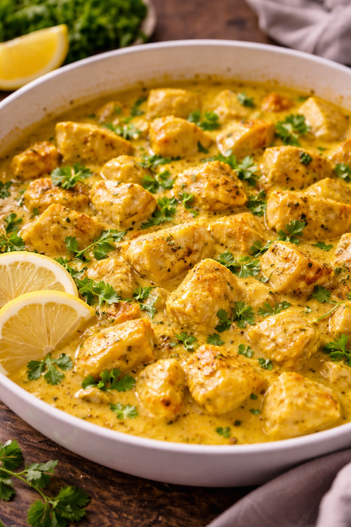

Ingrédients
Nombre de personnes :
4 personnes
Les quantités s’ajustent automatiquement.
Optionnel : gingembre, coriandre, petits pois, épinards, tomates cerises.
Préparation du poulet curry rapide
- Émince l’oignon, hache l’ail. Coupe le poulet en morceaux.
- Fais chauffer l’huile dans une grande poêle. Fais dorer le poulet 3–4 min.
- Ajoute l’oignon + l’ail, puis laisse revenir 2 min.
- Ajoute le curry, mélange 30 secondes (ça “réveille” les épices).
- Verse la crème (ou coco) + le bouillon. Mélange, puis laisse mijoter 8–10 min.
- Goûte, ajuste sel/poivre. Ajoute un trait de citron si tu veux plus de fraîcheur.
- Servez chaud, idéalement avec riz, pâtes ou semoule.
Astuces pour une sauce curry parfaite
- Plus crémeux : ajoute 1 c. à soupe de crème en fin de cuisson.
- Plus parfumé : ajoute un peu de gingembre râpé avec l’ail.
- Plus “coco” : remplace crème par lait de coco (super bon).
- Plus épais : laisse mijoter 2–3 min de plus à feu doux.
Variantes rapides
- Poulet curry coco : lait de coco + coriandre + citron vert.
- Poulet curry légumes : ajoute petits pois/épinards 2 min avant la fin.
- Poulet curry express au yaourt : remplace crème par yaourt grec (hors du feu).
Avec quoi servir ce poulet curry ?
- 🍚 Riz basmati ou riz sauté
- 🥗 Salade fraîche (simple et rapide)
- 🥖 Pain / naan
- 🍝 Pâtes (ça marche très bien aussi)
FAQ – Poulet curry rapide
Quelle partie du poulet est la meilleure ?
Le blanc est rapide. Le haut de cuisse est plus moelleux et pardonne plus (top pour une sauce).
Crème ou lait de coco ?
Les deux marchent : la crème = plus “cuisine française”, coco = plus exotique et parfumé.
Ça se conserve ?
Oui, 2 jours au frigo. Réchauffe à feu doux avec un petit splash d’eau ou de bouillon.
À lire aussi
👉 Si tu aimes les recettes rapides :
Riz sauté œuf légumes,
Pâtes au thon express,
Poulet miel moutarde au four.